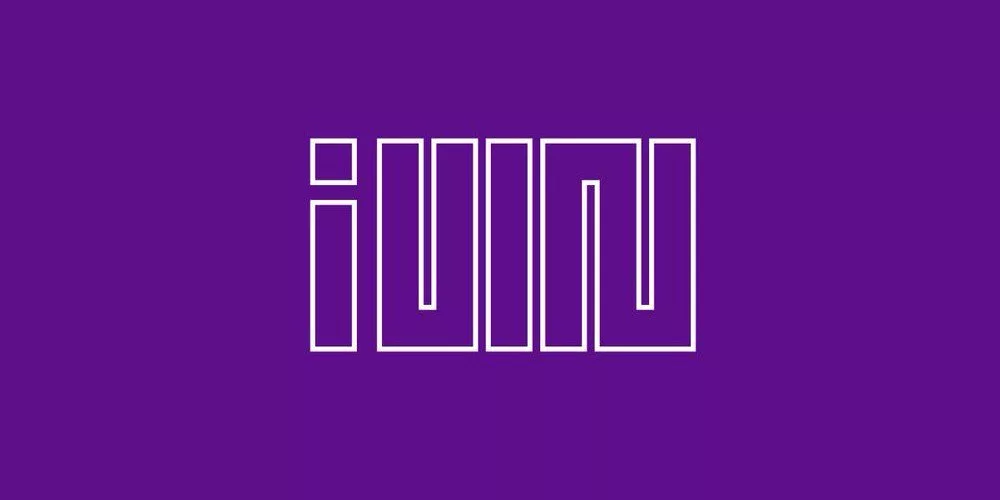
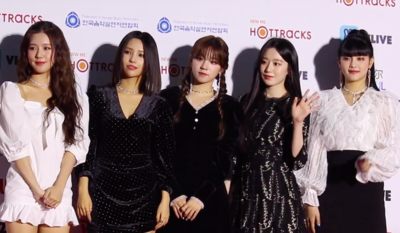

(G)I-DLE (кор. (여자)아이들) - жіночий k-pop (південно корейська музика) гурт
створений у 2018 році компанією CUBE Entertainment.
Гурт складався з 6-ти учасниць (Сойон, Суджин, Мінні, Мійон, Юці, Шухуа).
У 2021 році Суджин покинула гурт, наразі вонa соло-артистка.
Можете клацнути сюди, щоб перейти в вікіпедію
Всі альбоми
- 2 (Super Lady, Revenge, Doll, Vision, 7Days, Fate, Rollie, Wife)
- HEAT (I DO, I Want That, Eyes Roll, Flip It, Tall Trees)
- I feel (Queencard, Allergy, Lucid, All Night, Paradise, Peter Pan)
- I Love (Nxde, LOVE, Change, Reset, Sculpture, DARK (X-file))
- I NEVER DIE (TOMBOY, Never Stop Me, VILLAIN DIES, ALREADY, POLAROID, ESCAPE, LIAR, MY BAG)
- I burn
- Oh my god {Limited Edition A}
- I Trust
- EMPIRE
- LATATA
- I Made
- I Am
(G)I-DLE

